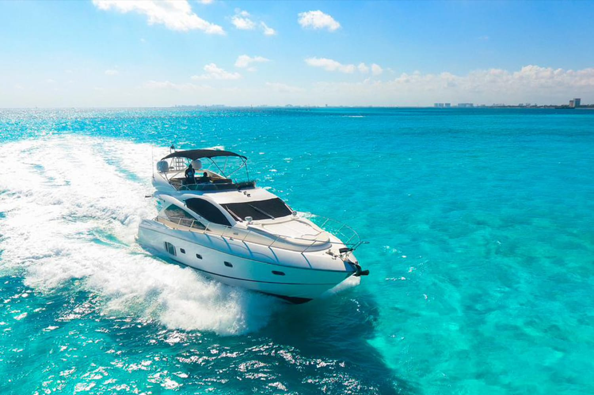

Tecnología que impulsa cada travesía
Como vieron anteriormente México no hace motores desde 0 esto es una desventaja hacia nuestro país ya que todo es de marca internacionales y suelen ser más caras haciendo que sea menos rentable a nuestro país la marca: Aquatrhust quieres ser que México sea más competitivo para las marcas internacionales y que sea una opción viable. Rentable, tanto internacionalmente como nacionalmente y empezar a hacer motores desde 0 para que sea más rentable y competitivo en este ramo, y en muchos más,
La visión de nuestra marca es competir con las marcas dominantes en el mercado, tanto costo beneficio como calidad para nuestros clientes, esto nos daría más oportunidades de empezar a ser más nacionalista que depender de países extranjeros que mayormente no circula. Hoy los beneficios son para los países extranjeros, y por eso nuestra visión es que México empiece afabricar Motores de barco para ser independiente para apoyar a la economía extranjera tanto para empezar a las estabilizar a empresas grandes empezar a competir en este terreno dominando por empresas grandes por eso esta es la visión gracias
Objetivos económicos y de competitividad Acceso a financiamiento y apoyos gubernamentales: Aprovechar programas de fondemar naffil y créditos industriales para obtener recursos que faciliten inversión en tecnología y expansión Diversificación de mercado no depender solo de clientes locales buscar exportación hacia países de Latinoamérica y el Caribe donde la industria maritema está en el crecimiento